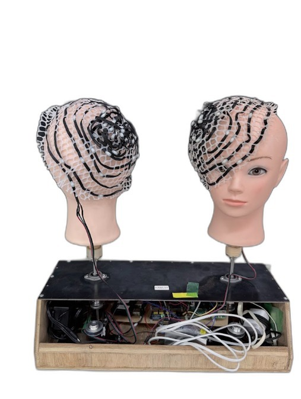
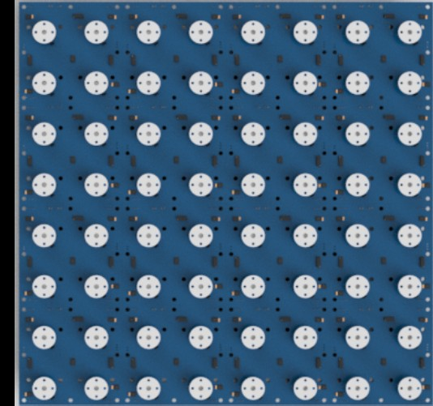
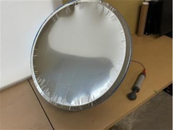

Model: CTR series 開発中運搬・ピッキング
総合輸送型ロボット CTR
| 用途 | 屋内カーゴの自律搬送・医療支援を想定 |
| 特徴 | 輸送に必要な多機能を搭載、多様な環境・場面に対応 |
| 実績 | 技育展・技育博（2024）、NT松戸（2025）出展 |
部品の設計・加工から組み立て、ソフトウェアまで一貫して当法人で開発しています。いずれも研究開発段階の機体であり、仕様は開発の進行に伴い変更されます。各機体の詳細な開発記録は研究ノート（旧サイト）で公開しています。
Model: CTR series 開発中運搬・ピッキング
| 用途 | 屋内カーゴの自律搬送・医療支援を想定 |
| 特徴 | 輸送に必要な多機能を搭載、多様な環境・場面に対応 |
| 実績 | 技育展・技育博（2024）、NT松戸（2025）出展 |



Model: — 開発中エンターテイメント
| 分類 | エンターテイメント・展示作品 |
| 概要 | 対話的に動作するヘッド型のロボット作品 |
| 製作 | HAWLEY David |

Model: — 開発中エンターテイメント
| 分類 | エンターテイメント・展示作品 |
| 概要 | パイプを用いたキネティック（動く）ディスプレイ作品 |
| 製作 | HAWLEY David |

Model: — 開発中その他
| 分類 | 防災・アウトドア機器 |
| 概要 | 防災用アルミブランケットとプラスチック桶で作る凹面鏡型ソーラークッカー。身近な材料だけで誰でも安価に製作できることを目標に開発 |
| 状態 | 高効率化を検討中 |
| 製作 | 蔭山 悠人 |
Units
| シリーズ | 種別 | 概要 | |
|---|---|---|---|
| Ce PB | ハンド・グリッパ | 把持などの動作機構 | 詳細 |
| TM | アーム先端ユニット | 角度調整・ハンド交換ロータリー・先端動作工具・一点照明など | 詳細 |
| Reye | 光学機器ユニット | ライントレース用IRセンサー・光感度センサーなど | 詳細 |
| R road | ロボット誘導端末 | 不可視光などを用いたロボット誘導 | 詳細 |
Software & Systems
| 名称 | 概要 | |
|---|---|---|
| アプリケーションソフト | 機体を動かすためのオペレーションソフトを開発しています | アプリ一覧 |
| 汎用ソフトウェア | タスク管理ソフト、入退館システムを開発しています | 詳細 |
| システム | 各機体に合わせてシナリオを組み込んだシステムを製作しています | システム一覧 |
| システム管理 | システム管理サイトでロボットを管理・制御。遠隔操作や2次元コードの生成にも挑戦しています | 詳細 |
| ソフトウェアと検証 | 実際のシステムを検証するための設備を紹介しています | 詳細 |
ロボット・ソフトウェア・システムの一覧は研究ノートのシステムページでも公開しています。
Prototypes
設計データ・ソースコードの一部は GitHub で公開しています。